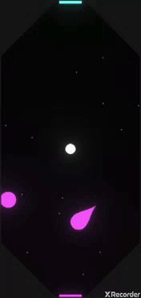
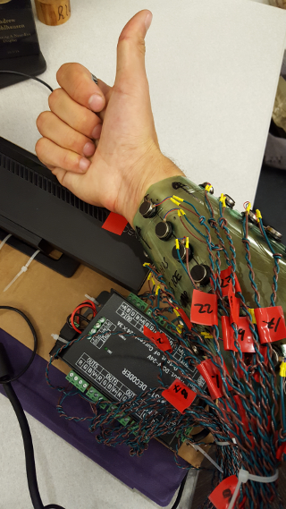
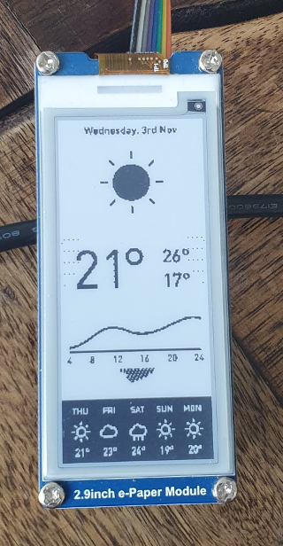

andy muehlhausen
Emerging Tech Experience Designer
My mission is to build meaningful human-to-human interactions that push the boundaries of technology.
Professional Experience
Apple, Vision Products Group
AR Experience Prototyper, 2022 - Present
I design interactions for emergent products with full stack consideration.
I serve as Experience DRI for successful interactions and work with EE, PD, and ID to ship.
Meta, Reality Labs Research
Senior Audio Experience Prototyper, 2020 - 2022
Tobii Eye-Tracking
Mixed Reality Eye-Tracked Interaction Designer, 2018 - 2020
Microsoft
Hardware Prototyper @ Incubation Labs, 2016 - 2018
Audio Experience Prototyper @ HoloLens, 2014 - 2016
Audio Experience Prototyper @ HoloLens, 2014 - 2016
Qualcomm Institute - UCSD Division of Calit2
Research Assistant, 2012 - 2014
Patents
U.S. Patents
- Eye Tracking (through ear canal deformation)
- Environmental Condition Based Spatial Audio Presentation
- Calibrating a near-eye display
- Remote multi-dimensional audio
- Synchronized spatial audio presentation
- Remembering audio traces of physical actions
- Volume adjustment on hinged multi-screen device
- Haptics to identify button regions
- Composite sound output for network connected devices
- Virtual object movement
- Context-based discovery of applications
- Augmented reality control of computing device
- Localizing devices in augmented reality environment
- Real-time remodeling of user voice
Education
Education
- University of California, San Diego (MFA), Theatre (Sound Design) · (2011 - 2014)
- Purdue University (BS), Computer Science; Minors: Theatre, Physics · (2006 - 2010)
Personal Projects
Personal Projects
- Apple IIe bootable disk for invitation to eggnog party, 2023
- SwiftPackageManager-only video game to learn swift, 2022
- AR Music Interaction weekend project, 2022
- Realtime full duplex wireless comms on ESP32, 2021
- Fourth Place of 30 teams, LeetHack Stockholm coding competition, 2020
- FingerLeague: phone LAN sport, 2019
- Tiny Wifi Arduino w/ power, usb, serial, 2018
- Ultra Low-Power E-paper Weather Module, 2018
- Sketch-and-Say AI-Assist Drawing, 2017
- Waveform Synthesis RGB LED controller, 2017
- Haptic Vision-Remapping Gauntlet, 2016
- kringla heimsins; collab w/ Joshua Tonies, 2014
- HTML5 live-synched audio reactive visualizers, 2014
- Sound-Augmented Ping Pong, 2014
- 55 Player Theatre Video Game, 2014
- 13' DIY Touchscreen/Projection-Tent Game, 2014
- So much music, whole life
Personal Project Videos


